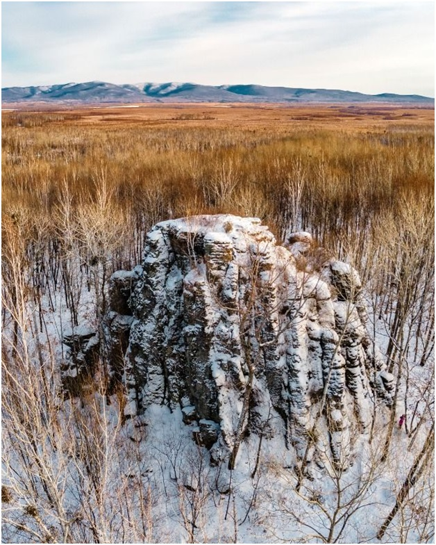

23. Камень-монах
Камень Монах расположен в Биробиджанском районе Еврейской автономной области, в междуречье реки Щукинка 3-я и р. Большой Ушумун, в 4,5 км северо-западнее места пересечения ж/д и а/д Биробиджан – Ленинское.
Представляет собой столбообразное, одиночно стоящее геологическое скальное образование, размером в поперечнике до 30 м, с превышением 16 м относительно земной поверхности, лишенное растительности. Породы, слагающие обнажение, имеют вулканическое происхождение. Располагается камень прямо посреди леса, больше подобных объектов в округе нет.
